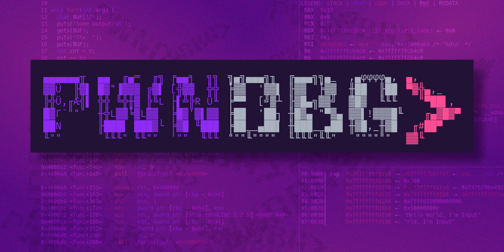

pwndbg Cheatsheet

pwndbg Cheatsheet¤
Tổng quan¤
pwndbg là GDB/LLDB plugin dành cho exploit development, reverse engineering và binary analysis. Được viết bằng Python, nó bổ sung hàng trăm lệnh và cải thiện output của GDB mặc định.
flowchart LR
A[Binary / Process] --> B[pwndbg / GDB]
B --> C[Context Display]
B --> D[Memory Analysis]
B --> E[Heap Inspection]
B --> F[Exploit Dev]
C --> C1[Registers / Stack / Disasm / Code]
D --> D1[telescope / hexdump / vmmap / search]
E --> E1[heap / bins / tcache / arena]
F --> F1[cyclic / checksec / rop / leakfind]
Hold "Alt" / "Option" to enable pan & zoom
Cài đặt¤
Bash
# Cài đặt pwndbg
git clone https://github.com/pwndbg/pwndbg
cd pwndbg
./setup.sh
# Kiểm tra
gdb -q
# Trong GDB: pwndbg
# Cài với LLDB
./setup.sh --lldb
# Cài trên Arch Linux
pacman -S pwndbg
# Docker
docker pull pwndbg/pwndbg
1. Khởi động và Điều hướng cơ bản¤
Bash
# ---- Khởi động GDB với pwndbg ----
gdb ./binary # Load binary
gdb -q ./binary # Load binary (quiet mode)
gdb ./binary core # Load binary với core dump
gdb -p <PID> # Attach vào running process
gdb --args ./binary arg1 arg2 # Load binary với arguments
# ---- Chạy chương trình ----
run # Chạy (viết tắt: r)
run arg1 arg2 # Chạy với arguments
run < input.txt # Chạy với stdin redirect
start # Chạy và dừng tại main()
starti # Chạy và dừng tại instruction đầu tiên
entry # Dừng tại entry point (pwndbg)
# ---- Continue / Step ----
continue # Tiếp tục chạy (viết tắt: c)
step # Step into (vào function) (viết tắt: s)
next # Step over (qua function) (viết tắt: n)
stepi # Step một instruction (assembly) (viết tắt: si)
nexti # Next instruction, không vào function (viết tắt: ni)
finish # Chạy đến khi return từ function hiện tại
until <addr> # Chạy đến địa chỉ nhất định
# ---- pwndbg Step commands ----
nextcall # Chạy đến CALL instruction tiếp theo
nextjmp # Chạy đến JUMP instruction tiếp theo
nextret # Chạy đến RET instruction tiếp theo
nextsyscall # Chạy đến SYSCALL tiếp theo
stepsyscall # Step vào SYSCALL
stepret # Step đến RET
stepover # Step over (như next nhưng smarter)
xuntil <addr> # Execute đến địa chỉ
# ---- Quit ----
quit # Thoát (viết tắt: q)
2. Context và Display¤
pwndbg tự động hiển thị context (registers, stack, disassembly, code) mỗi khi dừng.
Bash
# ---- Context ----
context # Hiển thị context (pwndbg)
ctx # Alias cho context
# Cấu hình context sections:
set context-sections 'regs disasm code stack backtrace'
set context-sections 'regs disasm code'
# Số dòng disassembly hiển thị
set context-disasm-lines 20
# Số dòng stack
set context-stack-lines 10
# Context history
contextprev # Hiển thị context trước đó
contextnext # Hiển thị context tiếp theo
# ---- Registers ----
regs # Hiển thị registers (pwndbg, đẹp hơn info regs)
info registers # GDB standard
info all-registers # Tất cả registers kể cả float/SSE
# Xem giá trị register
p $rax # In giá trị RAX
p/x $rip # In RIP dạng hex
p/d $rsp # In RSP dạng decimal
# Set register value
set $rax = 0
set $rip = 0x401234
# ARM/AArch64
cpsr # Current Program Status Register (ARM)
fsbase # FS base register
gsbase # GS base register
setflag <flag> <0|1> # Set CPU flag (e.g. ZF, CF)
# ---- Disassembly ----
disassemble # Disassemble function hiện tại
disassemble main # Disassemble function main
disassemble 0x401000 # Disassemble từ địa chỉ
disassemble 0x401000, 0x401050 # Disassemble range
x/20i $rip # 20 instructions từ RIP (GDB)
nearpc # Disassembly quanh PC (pwndbg)
nearpc 20 # 20 instructions
emulate # Disassembly với emulation (unicorn engine)
3. Breakpoints¤
Bash
# ---- Đặt breakpoint ----
break main # BP tại function main (viết tắt: b)
break *0x401234 # BP tại địa chỉ cụ thể
break *main+10 # BP tại offset từ symbol
break file.c:42 # BP tại line số trong source
tbreak main # Temporary BP (xóa sau khi hit 1 lần)
# ---- pwndbg breakpoints ----
breakrva 0x1234 # BP tại RVA (relative virtual address) — tự add base PIE
bp 0x401234 # WinDbg-style breakpoint (pwndbg compat layer)
# ---- Conditional breakpoints ----
break main if $rdi == 0 # BP với condition
break *0x401234 if *(int*)$rsp == 0x41414141
# ---- Quản lý breakpoints ----
info breakpoints # Liệt kê BP (viết tắt: i b)
disable 1 # Disable BP số 1
enable 1 # Enable BP số 1
delete 1 # Xóa BP số 1
delete # Xóa tất cả BP
ignore 1 5 # Ignore BP 1, 5 lần tiếp theo
# pwndbg
bl # List breakpoints (WinDbg compat)
bc 1 # Clear BP 1
bd 1 # Disable BP 1
be 1 # Enable BP 1
# ---- Watchpoints (data breakpoints) ----
watch *0x404000 # Break khi địa chỉ bị write
rwatch *0x404000 # Break khi địa chỉ bị read
awatch *0x404000 # Break khi access (read hoặc write)
# ---- Break-if-taken / if-not-taken ----
# pwndbg specific
break-if-taken # Break nếu jump được taken
break-if-not-taken # Break nếu jump không được taken
4. Memory Inspection¤
Bash
# ---- Xem bộ nhớ (GDB standard) ----
x/10gx $rsp # 10 giant (8-byte) hex words từ RSP
x/20wx 0x404000 # 20 word (4-byte) hex
x/30bx $rip # 30 bytes hex từ RIP
x/10s 0x404000 # 10 strings từ địa chỉ
x/10i 0x401000 # 10 instructions (disassembly)
# Format specifiers:
# o(octal), x(hex), d(decimal), u(unsigned), t(binary), f(float), a(address), c(char), s(string), i(instruction)
# Size: b(byte), h(halfword=2), w(word=4), g(giant=8)
# ---- Telescope (pwndbg) ----
# Recursively dereference pointers — cực kỳ hữu ích
telescope $rsp # Xem stack từ RSP
telescope $rsp 20 # 20 entries
telescope 0x404000 # Xem từ địa chỉ cụ thể
telescope 0x404000 30 # 30 entries
# ---- Hexdump (pwndbg) ----
hexdump $rsp # Hexdump từ RSP
hexdump 0x404000 # Hexdump từ địa chỉ
hexdump 0x404000 100 # 100 bytes
# WinDbg compat hexdump commands:
db 0x404000 # Dump bytes
dw 0x404000 # Dump words (2 bytes)
dd 0x404000 # Dump dwords (4 bytes)
dq 0x404000 # Dump qwords (8 bytes)
da 0x404000 # Dump ASCII string
ds 0x404000 # Dump string
# ---- Write memory (pwndbg/WinDbg compat) ----
eb 0x404000 0x41 # Write byte 0x41 to address
ew 0x404000 0x1234 # Write word
ed 0x404000 0x12345678 # Write dword
eq 0x404000 0x1234567890abcdef # Write qword
ez 0x404000 "hello" # Write string (null-terminated)
eza 0x404000 "hello" # Write ASCII string
# Patch memory
patch 0x401234 "nop; nop" # Patch với assembly instructions
patch 0x401234 b'\x90\x90' # Patch với bytes
patch-list # List patches đã áp dụng
patch-revert # Revert patches
# ---- Xinfo ----
xinfo 0x404000 # Thông tin chi tiết về địa chỉ (section, permissions...)
xinfo $rsp
# ---- Distance ----
distance 0x401000 0x401050 # Tính khoảng cách giữa 2 địa chỉ
# ---- XOR memory ----
xor 0x404000 100 0x41 # XOR 100 bytes từ địa chỉ với key 0x41
# ---- Memory frob ----
memfrob 0x404000 100 # XOR với 42 (từng byte)
5. Virtual Memory Maps¤
Bash
# vmmap — hiển thị memory map với permissions và thông tin
vmmap # Toàn bộ virtual memory map
vmmap libc # Lọc theo tên
vmmap 0x404000 # Kiểm tra địa chỉ thuộc segment nào
# ELF sections
elfsections # Liệt kê ELF sections (.text, .data, .bss, ...)
# Thêm/xóa manual vmmap entries
vmmap-add 0x1000 0x2000 rwx "[custom]"
vmmap-clear
# Load vmmap từ file
vmmap-load /path/to/vmmap.txt
# Thông tin PIE base
piebase # In PIE base address
# Explore vmmap interactively
vmmap-explore
6. Stack Analysis¤
Bash
# Stack inspection
stack # Hiển thị stack (pwndbg)
stack 30 # 30 entries
stackf # Stack với frame info
# Stack canary
canary # Tìm và hiển thị stack canary value
# Return address
retaddr # Hiển thị return addresses trên stack
# Stack explore
stack-explore # Interactive stack exploration
# Backtrace
backtrace # Call stack (viết tắt: bt)
backtrace full # Với local variables
frame N # Switch đến frame N
up / down # Di chuyển qua frames (pwndbg: up/down)
info frame # Thông tin frame hiện tại
# WinDbg compat
k # Backtrace (WinDbg style)
7. Heap Analysis (glibc ptmalloc2)¤
pwndbg cung cấp bộ công cụ phong phú để phân tích glibc heap — cực kỳ quan trọng cho heap exploitation.
Bash
# ---- Arena ----
arena # Thông tin main arena
arenas # Tất cả arenas (multi-threaded)
mp # Malloc parameters (mp_ struct)
# ---- Heap chunks ----
heap # Liệt kê tất cả chunks trong heap
heap -v # Verbose mode
heap --pid <PID> # Heap của process khác
malloc-chunk 0x405010 # Thông tin chunk tại địa chỉ
top-chunk # Thông tin top chunk
# ---- Bins ----
bins # Tất cả bins (fastbins + tcache + small + large + unsorted)
fastbins # Chỉ fastbins
smallbins # Small bins
largebins # Large bins
unsortedbin # Unsorted bin
tcache # tcache (glibc 2.26+)
tcachebins # tcache bins với counts
# ---- Visualize heap ----
vis-heap-chunks # Visual representation của heap chunks
vis-heap-chunks --all # Bao gồm cả free chunks
# ---- Heap exploitation helpers ----
find-fake-fast 0x404060 # Tìm fake fastbin chunk gần địa chỉ
try-free 0x405010 # Giả lập free() tại địa chỉ — kiểm tra lỗi
# ---- Heap info ----
hi # Heap info tổng quan
# ---- Track heap ----
track-heap # Track allocations real-time
8. GOT / PLT Analysis¤
Bash
# GOT — Global Offset Table
got # Hiển thị GOT entries (tên, địa chỉ, giá trị)
gotplt # GOT + PLT combined view
# PLT — Procedure Linkage Table
plt # Hiển thị PLT entries
# Track GOT modifications real-time
track-got # Enable GOT tracking
# Link map
linkmap # Walk link_map structures (loaded libraries)
# Library info
libcinfo # Thông tin về libc được load
# ---- ELF info ----
elfsections # ELF sections
argc # Argument count
argv # Argument vector
auxv # Auxiliary vector
auxv-explore # Interactive auxv explorer
envp # Environment pointer
9. Searching¤
Bash
# ---- Search (pwndbg) ----
search -s "hello" # Tìm string
search -x "41424344" # Tìm hex bytes
search -b 0x41 # Tìm byte
search -w 0x1234 # Tìm word (2 bytes)
search -d 0x12345678 # Tìm dword (4 bytes)
search -q 0x1234567890abcdef # Tìm qword (8 bytes)
search -p 0x404000 # Tìm pointer
# Giới hạn vùng search
search -s "flag" --writable # Chỉ trong writable regions
search -s "/bin/sh" libc # Chỉ trong libc
# ---- Strings (pwndbg) ----
strings 0x404000 100 # Tìm strings trong 100 bytes từ địa chỉ
# ---- Leak finding ----
leakfind 0x404000 # Tìm pointer chains từ địa chỉ
leakfind 0x404000 --depth 5 # Depth tối đa 5 hops
probeleak 0x404000 # Probe for leakable pointers
probeleak 0x404000 0x405000 # Trong range
# ---- P2P — Pointer to Pointer ----
p2p 0x404000 # Tìm pointers trỏ đến địa chỉ này
10. ROP Gadgets¤
Bash
# ---- ROP (pwndbg + ROPgadget/ropper) ----
rop # Tìm ROP gadgets (cần ROPgadget)
rop --grep "pop rdi" # Lọc theo pattern
rop --grep "ret" # Tìm tất cả ret gadgets
ropper # Dùng ropper thay thế
ropper --search "pop rdi"
# ---- Sigreturn frame ----
sigreturn # Tạo SROP frame
# ---- One-gadget ----
onegadget # Tìm one-gadget (execve("/bin/sh",...))
# ---- Cyclic pattern ----
cyclic 100 # Tạo cyclic pattern 100 bytes (de Bruijn sequence)
cyclic -l 0x61616166 # Tìm offset của pattern
cyclic 200 -n 8 # Pattern với chunk size 8 (64-bit)
11. Exploit Development Utilities¤
Bash
# ---- Checksec ----
checksec # Kiểm tra security features của binary
# Output: RELRO, Stack Canary, NX, PIE, RPATH, RUNPATH, Fortify
# ---- Assembly inline ----
asm "mov rax, 1; syscall" # Assemble và in bytes
# ---- Errno ----
errno 13 # Tên của errno 13 (EACCES)
errno # Errno hiện tại
# ---- Threads ----
threads # List threads
killthreads # Kill tất cả threads ngoại trừ current
# ---- Process info ----
procinfo # Info về process (UID, GID, fds, SELinux context)
pid # Process ID
# ---- ASLR ----
aslr # Kiểm tra ASLR status
aslr off # Tắt ASLR (cần quyền)
# ---- Hijack FD ----
hijack-fd 1 /tmp/output.txt # Redirect fd 1 (stdout) sang file
# ---- Mmap / Mprotect ----
mmap 0x1337000 0x1000 rwx # Allocate memory
mprotect 0x404000 0x1000 rwx # Change permissions
# ---- Spray ----
spray 0x404000 100 0x41 # Spray memory với byte pattern
# ---- Cymbol (Symbol lookup) ----
cymbol malloc # Tìm địa chỉ symbol
# ---- Plist ----
plist 0x4040a0 # Walk linked list tại địa chỉ
# ---- Valist ----
valist 0x4040a0 # Walk va_list
# ---- Hex2ptr ----
hex2ptr 0x4007f6 # Convert hex string sang pointer
12. Kernel Debugging¤
pwndbg hỗ trợ kernel debugging qua QEMU GDB stub.
Bash
# Kết nối QEMU
target remote localhost:1234 # Kết nối đến QEMU GDB stub
# ---- Kernel info ----
kversion # Kernel version
kcmdline # Kernel command line
kconfig # Kernel configuration
kbase # Kernel base address
klookup commit_creds # Lookup kernel symbol
# ---- Kernel processes ----
kcurrent # Current task_struct
ktask # Walk task list
# ---- Kernel modules ----
kmod # List kernel modules
# ---- Memory ----
kdmesg # Đọc dmesg từ memory
kfile # File-related kernel structures
# ---- Security ----
kchecksec # Kernel security features
# ---- BPF ----
kbpf # BPF programs và maps
# ---- Paging ----
pagewalk 0xffff888000000000 # Walk page tables
pageinfo 0xffff888000000000 # Thông tin trang
v2p 0xffff888012345678 # Virtual to physical
p2v 0x12345678 # Physical to virtual
kbase # KASLR base
# ---- SLUB Allocator ----
slab # SLUB slab info
# ---- Buddy Allocator ----
buddydump # Dump buddy allocator state
# ---- MSR ----
msr 0xc0000082 # Read Model-Specific Register
# ---- GDT ----
gdt # Global Descriptor Table
# ---- Android Binder ----
binder # Android Binder IPC structures
13. Configuration & Theming¤
Bash
# ---- Xem cấu hình ----
pwndbg # Liệt kê tất cả commands
config # Xem/set configuration options
config context-backtrace-lines 5 # Set số dòng backtrace
# ---- Theme ----
theme # Xem color theme settings
theme stack-address # Màu của stack addresses
# ---- Save config ----
configfile # In đường dẫn config file
# Edit ~/.config/pwndbg/config.py để lưu settings
# ---- Tips ----
tips # Hiển thị random tip về pwndbg
# ---- Version ----
version # pwndbg version
# ---- Bugreport ----
bugreport # Tạo bug report
# ---- Heap config ----
heap-config # Xem heap-related configuration
14. Decompiler & AI Integration¤
Bash
# ---- Decompiler integration ----
# Hỗ trợ IDA, Binary Ninja, Ghidra, angr-management
decompiler-integration # Setup decompiler integration
decomp # Xem decompiled code tại PC hiện tại
# IDA
r2 # Kết nối radare2
r2pipe # Raw r2pipe command
# Rizin
rz # Kết nối rizin
rzpipe # Raw rzpipe command
# ---- AI assistance ----
ai "explain this function" # AI analysis (cần setup)
15. WinDbg Compatibility Layer¤
pwndbg có đầy đủ WinDbg commands — hữu ích cho người từ Windows background chuyển sang.
Bash
# Breakpoints
bp 0x401234 # Set breakpoint
bl # List breakpoints
bc 1 # Clear BP 1
bd 1 # Disable BP 1
be 1 # Enable BP 1
# Memory display
db 0x404000 # Display bytes
dw 0x404000 # Display words
dd 0x404000 # Display dwords
dq 0x404000 # Display qwords
dds 0x404000 # Display with symbols
da 0x404000 # Display ASCII
ds 0x404000 # Display string
# Memory write
eb 0x404000 0x41 # Edit byte
ew 0x404000 0x1234 # Edit word
ed 0x404000 0xdeadbeef # Edit dword
eq 0x404000 0xdeadbeefcafebabe # Edit qword
ez 0x404000 "hello" # Edit string
eza 0x404000 "hello" # Edit ASCII string
# Execution
go # Continue (WinDbg go)
pc # Program counter value
# Stack
k # Call stack
ln 0x401234 # List nearest symbols
# Process
peb # Process Environment Block (Windows)
16. Workflow Mẫu — Heap Exploitation¤
Bash
# Bước 1: Kiểm tra binary
gdb ./pwn_challenge
checksec
# Bước 2: Chạy và xem heap layout
start
heap
vis-heap-chunks
# Bước 3: Sau vài alloc/free
continue
# (khi BP hit)
bins
tcachebins
# Bước 4: Tìm libc address leak
telescope $rsp 30
search -p 0x7f0000000000 # Tìm libc addresses
# Bước 5: Tính offset
piebase
distance 0x401000 0x401234
# Bước 6: ROP chain
rop --grep "pop rdi; ret"
onegadget
# Bước 7: Exploit
cyclic 200
# (crash)
cyclic -l <crash value> # Tìm offset
17. pwndbg Commands Quick Reference¤
Text Only
--- NAVIGATION ---
r / run Chạy chương trình
c / continue Tiếp tục
s / step Step into
n / next Step over
si Stepi (assembly)
ni Nexti (assembly)
finish Đến return
q / quit Thoát
--- BREAKPOINTS ---
b *<addr> Breakpoint tại address
tb *<addr> Temporary breakpoint
i b Info breakpoints
d <num> Delete breakpoint
watch *<addr> Watchpoint
--- DISPLAY ---
context / ctx Hiển thị context
regs Registers
telescope $rsp Dereference stack
hexdump <addr> Hexdump
stack Stack view
nearpc Disassembly quanh PC
--- MEMORY ---
vmmap Virtual memory map
search -s "str" Tìm string
search -x "hex" Tìm hex bytes
x/Nfmt <addr> Xem memory (GDB)
patch <addr> Patch memory
xinfo <addr> Address info
--- HEAP ---
heap Liệt kê chunks
bins Tất cả bins
tcachebins tcache bins
vis-heap-chunks Visual heap
arena Arena info
--- EXPLOIT ---
checksec Security features
cyclic N Cyclic pattern
cyclic -l val Tìm offset
rop ROP gadgets
leakfind Tìm leak chains
canary Stack canary
--- GOT/PLT ---
got GOT entries
plt PLT entries
piebase PIE base address
Tài nguyên tham khảo thêm: - pwndbg docs:
https://pwndbg.re/stable/- pwndbg CHEATSHEET PDF:https://pwndbg.re/dev/CHEATSHEET.pdf